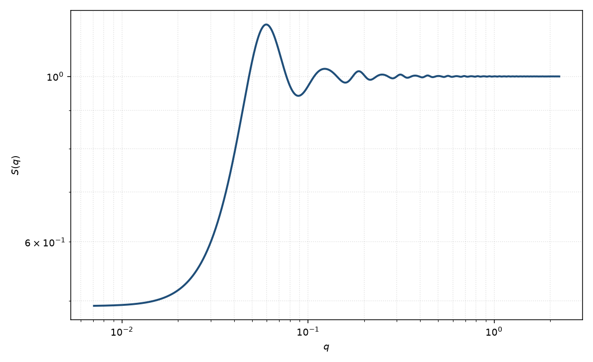

方阱结构因子
square well
适用场景
硬核之外有一段宽度有限的吸引方阱（$u=-\varepsilon$ 于 $\sigma<r<\lambda\sigma$）时，用方阱闭包下的 $S(q)$。典型对象：中等程耗尽吸引、弱吸附层造成的有限宽度吸引，以及阱宽 $\lambda$ 可从化学上估计的胶体。
零程极限用黏性硬球。需要平滑的 Yukawa 尾或同时有排斥时用双 Yukawa。Sharma–Sharma 所用 MSA 对深阱、高密度并不特别合适，浅阱低 $\eta$ 更稳妥。
物理图像
平均球近似把核外直接相关取成 $-\beta u(r)$。方阱因此在 $\sigma$ 到 $\lambda\sigma$ 之间给 $\hat{c}(q)$ 一段解析的球壳傅里叶变换，再叠加硬球 PY 核内项。吸引使 $S(0)$ 升高，第一峰仍由硬核尺度主导。
阱宽 $\lambda$ 与阱深 $\varepsilon/kT$ 在单条 $S(q)$ 上高度相关：宽而浅与窄而深可给出相近低 $q$。能从聚合物回转半径或吸附层厚度固定 $\lambda$ 时，再拟合 $\varepsilon$。
示意图

核心公式
方阱势 $u(r)=\infty$（$r<\sigma$），$u=-\varepsilon$（$\sigma<r<\lambda\sigma$），核外为零。MSA 闭包
$$\hat{c}(q)=\hat{c}_{\mathrm{HS}}(q)+\hat{c}_{\mathrm{well}}(q),\qquad S(q)=\bigl[1-n\hat{c}(q)\bigr]^{-1}.$$阱的傅里叶项正比于 $\varepsilon$ 与球壳积分 $[\sin(\lambda x)-\lambda x\cos(\lambda x)-\sin x+x\cos x]/x^3$，$x=q\sigma$。本页采用 Sharma 与 Sharma 对硬球结构因子的方阱推广。
参数表
| 参数 | 符号 | 含义 | 单位 | 典型范围 |
|---|---|---|---|---|
| 硬球半径 | $R$ | 硬核半径，$\sigma=2R$ | Å | 与 $P(q)$ 半径可比 |
| 体积分数 | $\eta$ | 硬球体积分数 | 无量纲 | MSA 经验上宜 $\lesssim 0.1$–$0.2$ |
| 阱宽比 | $\lambda$ | 阱外缘 $/\,\sigma$，须 $>1$ | 无量纲 | $1.05$–$1.8$ |
| 阱深 | $\varepsilon/kT$ | 吸引深度（热单位） | 无量纲 | 浅阱 $\lesssim 1.5$ |
| 标度 / 本底 | $\mathrm{scale}$, $B$ | $I=P\,S+B$ 的前置与本底 | 与强度单位一致 | 实验相关 |
拟合注意
可辨识性：$S(q)$ 的半径（或直径）与形式因子半径、体积分数与标度在同时自由拟合时高度退化。先在稀溶液固定 $P(q)$，再用浓度系列的低 $q$ 变化约束 $S(q)$；不要把 $P(q)$ 与 $S(q)$ 的全部参数一起放开。 $\lambda$ 与 $\varepsilon$ 共线：有独立尺度就固定阱宽。深阱高密度时 MSA 相对模拟偏差大，不要把拟合残差解释成第二种势。
取向对球无关。多分散会模糊阱与硬核的边界。磁性通道共用 $S(q)$。
相近模型
- 硬球结构因子 — $\varepsilon=0$ 的极限。
- 黏性硬球结构因子 — $\lambda\to 1$、$\varepsilon\to\infty$ 的 Baxter 极限。
- Hayter–MSA 结构因子 — 排斥 Yukawa，不是吸引方阱。
- 双 Yukawa 结构因子 — 平滑的两段指数势。
参考文献
- Sharma, R. V.; Sharma, K. C. The structure factor and the transport properties of dense fluids having molecules with square well potential, a possible generalization. Physica A 1977, 89, 213–218. DOI: 10.1016/0378-4371(77)90151-0
- Ashcroft, N. W.; Lekner, J. Structure and resistivity of liquid metals. Phys. Rev. 1966, 145, 83–90. DOI: 10.1103/PhysRev.145.83